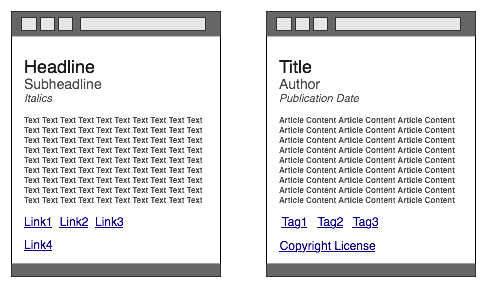
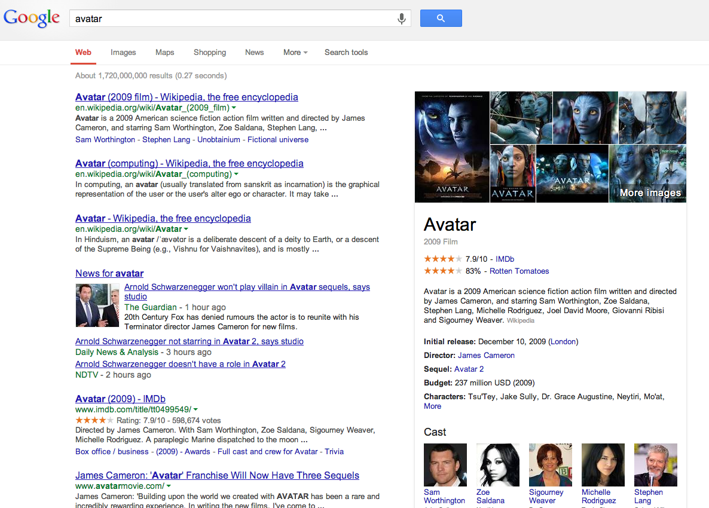
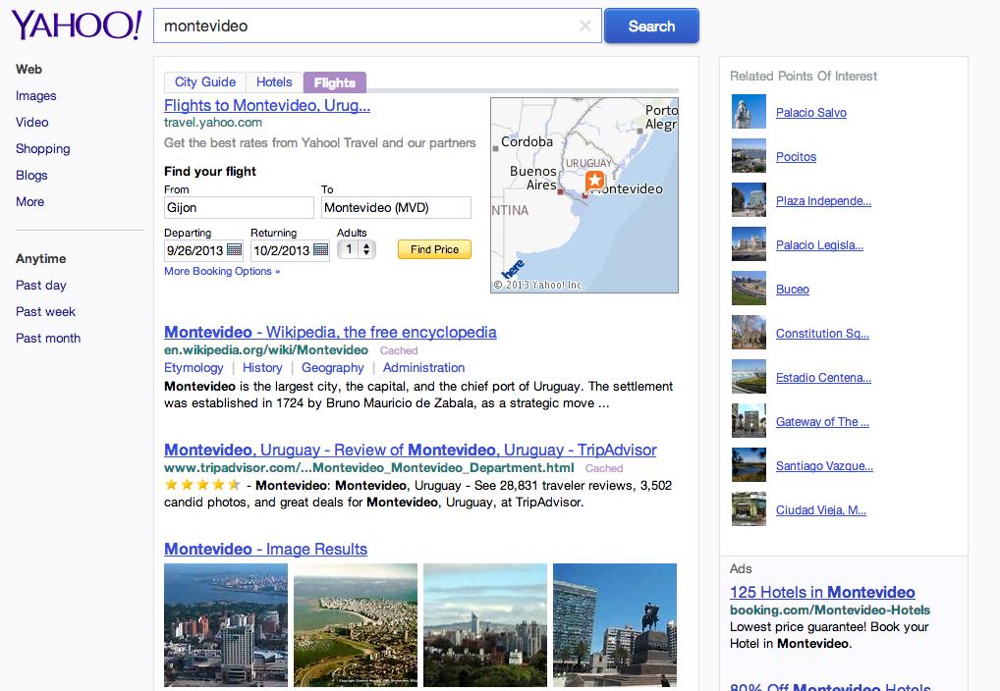
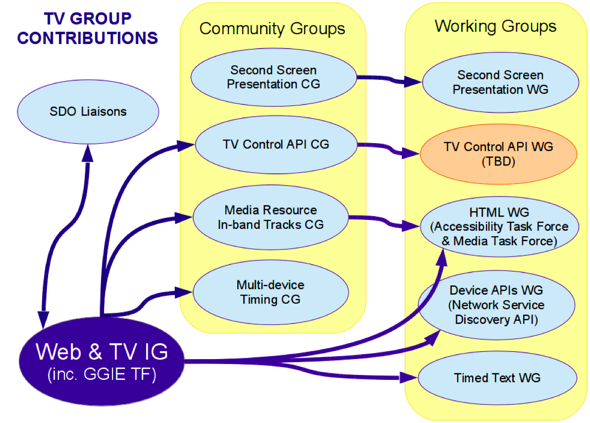
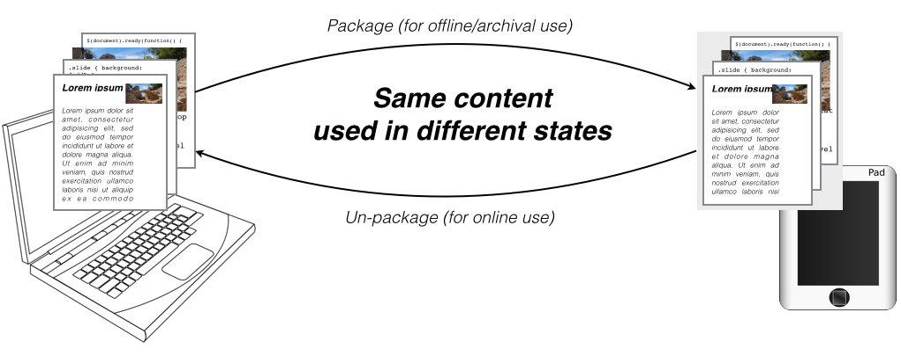
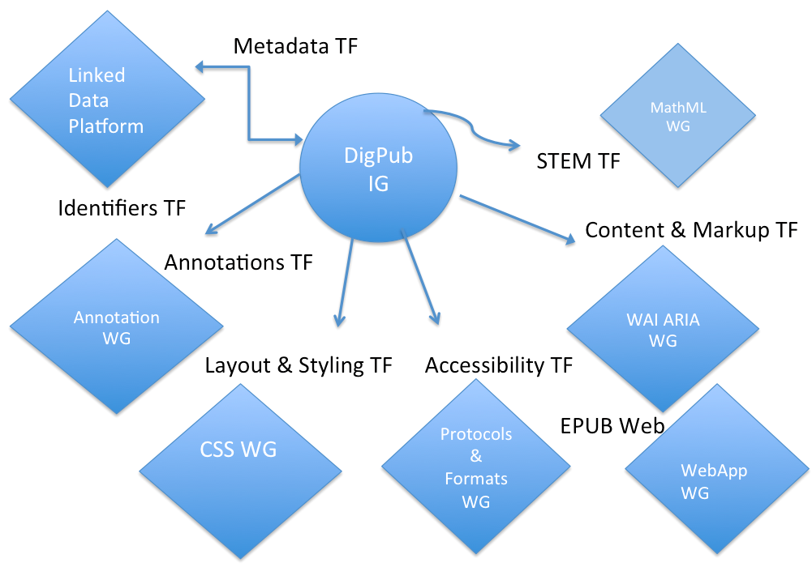

W3C y los estándares Web
Inteligencia Artificial: Pilares Fundamentales y Áreas de Aplicación Profesional (Universidad de Valladolid)
Segovia, 2 septiembre 2015
Un mundo en constante cambio
25 años de Web
(pre)Historia de la Web

La "Web" en 1989

(1989) El primer boceto

La Web en 1990

(1990) WorldWideWeb

La Web crece

¿W3C?
World Wide Web Consortium
- Organismo neutro
- Fundado en 1994 por Tim Berners-Lee
- 82 personas en el Team
- 382 Miembros
- +70 Grupos del W3C (con más de 1.500 investigadores)
- Relaciones con otros organismos estandarizadores
{kind=link}
4.632 personas en los grupos de comunidad del W3C
Realmente WorldWide

Miembros en España

W3C.es @ CTIC

¿Qué hace el W3C?
Voice WebCGM PICS HTMLTidy Databinding WebOntology HTML CompoundDocumentFormats SPARQL WAI Web APIs Libwww PatentPolicy OWL TimedText XMLEncryption Multimodal XML RichWebClients XMLProcessing DeviceIndependence URI/URL DOM HTTP Accessibility RDF WebApplicationFormats XMLBase Jigsaw XLink I18N P3P QualityAssurance XMLKeyManagement UbiquitousWeb InkML Incubator XPath WebServices XForms CSS SOAP Mobile SMIL Rules SVG Amaya SemanticWeb MathML
Especificaciones, directrices y herramientas abiertas con la política de patentes más transparente en Internet
+330 Recomendaciones

¿Estándares W3C?
- Ahorro de costes para las empresas
- Cooperación con los mejores expertos de la Web - ahorro de consultorías
- Compartir inversión I+D: más allá de los recursos de una sola organización
- Intercambio de ideas y experiencias
- Las mejores especificaciones gracias a una amplia revisión
- Libres de derechos y gratuitos
- Compartir el coste de las pruebas de desarrollo
¿Cómo se construyen?
Un objetivo único
Acceso universal
...ofrecer la misma información y servicios a los usuarios, independientemente de quienes son, donde están, los sistemas que usan o la forma mediante la que se conectan
Independiente del dispositivo
- PCs, lectores de eBook, teléfonos, TVs, PDAs, dispositivos en electrodomésticos o en automóviles...
- limitación en: ancho de banda, pantalla, colores, sonido...
..."discapacidades" de los usuarios
- distinción de colores, ceguera, ...
- dificultades de manejo de teclados, ratón, ...
- dislexia, dificultades cognitivas o neurológicas, ...
..diferencias culturales, geográficas o lingüísticas
- sentidos de escritura, diferentes tipos de teclados, ...
- formato de fechas, números de teléfono, códigos postales, IDs,...
La Plataforma Web Abierta
La Plataforma Web Abierta
- Interfaces: Geo-localización, giroscopios, cámaras, NFC…
- Multimedia: Audio/vídeo, gráficos, animaciones, fuentes…
- Multidispositivo: varias resoluciones, táctil, teclados, voz, vibración…
- Comunicaciones: cliente-servidor, real-time, p2p, sockets…
- Sociedad: privacidad, seguridad, idioma, accesibilidad…
- Procesam. auto.: semántica, interoperabilidad…
HTML5
Vídeo, audio, SVG, WebGL, MathML de forma nativa
- Acceso a los dispositivos (APIs)
- Mejor interacción (ejemplo)
video: brokenp87
CSS
Un ejemplo... Bordes + WOFF
@font-face {
font-family: 'Pretty';
src: url('Pretty.woff') format('woff') ;
}
En un lugar de la Mancha, de cuyo nombre no quiero acordarme, no ha mucho que vivía un hidalgo de los de lanza en astillero, adarga antigua, rocín flaco y galgo corredor.
HTML5, no sólo presentación
Semántica en los documentos (RDFa)

Las máquinas lo entienden

Las máquinas lo entienden

(Meta)datos en los Documentos
RDFa
Soy Fulanito […] Visita
mi sitio web,
o escríbeme a fulanito@w3c.es
El Futuro del W3C
Actividades verticales en W3C
- Entretenimiento
- Edición Digital
- Pagos en la Web
- Automoción
- Telecomunicaciones
- Web Social
- Marketing Digital
Siempre manteniendo las horizontales
- Seguridad, Privacidad
- WAI
- Datos
- Web of Things (WoT)
Web & TV
La Web como un medio de distribución del contenido
- Visionado on-the-go
- Contenido multi-pantalla
- Retransmisión interactiva
- Apps HTML5
Web & TV IG (hasta ahora)
- Publicado Requirements for Adaptive Bit Rate Streaming para
videoen HTML5 - Contribuciones para Media Source Extensions para múltiples casos en la adaptación del streaming
- Contribuciones a Encrypted Media Extensions para el servicio de contenido protegido
Web & TV IG (hasta ahora)
- Requisitos para segunda pantalla al Device APIs WG que resultó en la especificación de Network Service Discovery
- Recomendaciones para el uso de contenido TTML y WebVTT para subtítulos
- Incubadora para la creación de Grupos Especiales y Grupos de Comunidad
Web & TV IG (en proceso)
- Audio fingerprinting
- Audio watermarking
- Identical media stream synchronization
- Related media stream synchronization
- Triggered interactive overlay
- Audio nítido
- Accesibilidad

Media Resource In-band Tracks CG
- Exposición de pistas in-band en medios
- Integración con los elementos
video&audio - Centrado en los formatos populares
- Analizando los tipos de recursos de medios
Glass to Glass Internet Ecosystem TF
- Creado por Comcast/NBCUniversal (2014)
- Identificación de tecnologías necesarias para:
- Captura de medios (cámaras, smartphones)
- Sistemas de edición
- Almacenamiento
- Empaquetado
- Proveedores (sitios de streaming, cable, IPTV, satélite)
- Clientes (navegadores web, TVs, tabletas, teléfonos)
- http://www.w3.org/2011/webtv/wiki/GGIE_TF
TV Control API CG
- Casos de uso
- Creación de un API basado en requisitos
- 55 miembros de 18 organizaciones
- http://www.w3.org/community/tvapi/
Second Screen Presentation API CG
- Creado como proyecto interno de Intel
- Contribuciones principales de Google, Netflix, Mozilla, Fraunhofer FOKUS
- Interés en ampliar las características y casos de uso
- http://www.w3.org/community/webscreens/
Multi-device Timing CG
- Propuesto en 2015 por Motion Corporation
- Sincronización del contenido en varios dispositivos
- Mejora en la precisión de elementos HTML5
- http://www.w3.org/community/webtiming/
Próxima reunión
F2F en Oct 2015 en (TPAC 2015)
Digital Publishing
Un usuario avanzado
La industria editorial es posiblemente el segundo usuario más importante de las tecnologías W3C después de los tradicionales navegadores
- Casi todas las revistas, periódicos, publicaciones técnicas tienen una versión online
- Las publicaciones académicas necesitan de la Web
- EPUB es, en esencia, un sitio web estático y empaquetado
Expectativas y requisitos
- Calidad de los tipos de fuentes, gráficos,…
- Nuevas formas de publicación basadas en multimedia y con interacción avanzada…
- Publicación de datos asociados a los documentos
Grupos especiales dentro de DPUB IG
- Anotaciones
- Diseño y estilos
- Metadatos
- Contenido y etiquetado
- Accesibilidad
- STEM (Science, Technology, Engineering, Maths)
Especificaciones relevantes
EPUB-WEB
Una visión de futuro


Participantes
Commercial Publishers
- Hachette
- Hal Leonard
- Pearson
- Safari
- Wiley
eReaders
- Apple
- Bluefire Productions
- Rakuten
Publishing Service Providers
- Adobe
- Antenna House
- Benetech
- Copyright Clearance Center
- Igalia
- Monotype Imaging
- Vivliostyle
Publishing Trade Organizations
- BISG
- DAISY Consortium
- IDPF
- Int’l Web Masters Assoc.
- Web 3D Consortium
Libraries, Academia
- iMinds
- MIND Center
- PUC-Rio
- Stanford
- Univeristy of Illinois
Other Document Publishers
- Bloomberg
- Canon
- Educational Testing Service
- IBM
- Intel
Gov’t
- CDAC (India)
- DISA (USA)
Pagos en la Web
Retos
- Sólo unos pocos finalizan las compras:
- El 72% sale sin completar el pago con la cesta llena
- El 97% en dispositivos móviles
- El fraude online es 10 veces mayor
- 0,09% fraude en tarjetas de crédito físicas
- 0,9% fraude en pagos online
- Nuevos instrumentos de pagos: p.e., bitcoins
- Nuevos requisitos: micro-pagos, cupones, tarjetas de fidelización…
Web Payments IG
- Foro de colaboración entre:
- Industria Web y fabricantes de navegadores
- Industria móvil
- Industria financiera
- Comercio electrónico
- Llevando los casos de uso a los Grupos de Trabajo existentes
- Nuevo trabajo técnico en torno a:
- Monederos electrónicos
- Autentificación y seguridad
Actividad
- Reunión en NYC la pasada semana
- Task Forces:
- Use Cases
- Payment Architecture
- External Reviews
- Settlement
- Security
- Glossary
- Communications
Participantes
Comercio
- Target
- NACS
- Digital Bazaar
- Nbreds
- Shimply
- Alibaba
Bancos
- Rabobank
- BPCE
- Federal Reserve Bank of Minneapolis
- Standard Treasury
- World Bank
Industria de pagos
- Gemalto
- Ingenico
- Bloomberg
- Visa
- Camara Interbancaria de Pagamentos
- Ripple Labs
- PayGate
- Worldpay
Reguladores y otros
- Federal Reserve
- GS1
- C-DAC
- FSTC (Financial Services Technology Consortium)
- The Paciello Group
- PCI Security Standards *
- SWIFT *
- MCX *
- FIDO Alliance *
- ISO TC68 SC7 *
- X9 *
- EMVCo *
Industria Web y móvil
- Verisign
- Opera
- Apple
- Orange
- At&T
- IBM
- Yandex
- Verizon
- Telenor
- GSMA
- Deutsche Telekom
- SAP
- Cisco
- GRIN Technologies
- Mozilla
- Intel
- SK Telecom
Otros grupos relacionados
- W3C:
- Fido Alliance, EMVco, ISO/X9, GSMA, …
Roadmap
- Jul-Sep 2015 se revisarán los estatutos para los grupos
- Sep 2015 se lanzarán los nuevos grupos de trabajo
- Oct 2015: Primer reunión de trabajo (TPAC 2015)
Automoción
Pilares de la actividad
- Business Group: activo como incubadora
- Web and Automotive Working Group (Feb 2015)
- Exposición de los datos de los vehículos de (p.e., MOST o CAN) a una aplicación Web
Participantes
Estándares relevantes
- HTML5, CSS3, WebApps, Video, Audio
- Geolocation, Web Notifications
- Speech, Accessibility
- Detección de Dispositivos, Sensor APIs
- Seguridad y Privacidad
- Entretenimiento
Web Of Things (WoT)
Enorme potencial
- Hasta ahora todo el trabajo centrado en IoT desde la perspectiva de sensores y protocolos de transporte
- El negocio está en los servicios, no en los sensores
- Gartner estima que el IoT alcance los 309.000m$ en beneficio directo en 2020 derivado principalmente de servicios
- El problema actual: datos en silos que no permiten a terceras partes la provisión de servicios
Web of Things IG
- Creado en enero 2015
- Primer F2F en abril 2015 (Munich)
- En preparación de los estatutos para lanzamiento de Grupo de Trabajo
- Estandarización de un lenguaje de descripción para WoT
- Estandarización de los enlaces a APIs y protocolos
- http://www.w3.org/WoT/
Participantes
- ACCESS CO.
- Toshiba Corporation
- Sony Corporation
- Siemens AG
- Plantronics, Inc.
- Panasonic Corporation
- Pacific Northwest National Laboratory
- Orange
- Oracle Corporation
- Opera Software
- OpenCar Inc
- Open Geospatial Consortium
- Nippon Telegraph & Telephone Corp. (NTT)
- Monohm Inc.
- LG Electronics
- Knowbility, Inc
- KDDI CORPORATION
- Intel Corporation
- National University of Ireland, Galway
- INRIA
- HP
- Fraunhofer Gesellschaft
- EVRYTHNG
- ERICSSON
- Electronics and Telecommunications Research Institute (ETRI)
- Cisco
- Avaya Communications
Data on the Web
eGovernment + Web Semántica
- Estándares para Open Data
- Buenas prácticas, CSV on the Web…
- Datos espaciales
- Data Shapes
Web Social
Standardizing the Social Web
Objetivos
Definición de protocolos, arquitectura, APIs para una comunicación estándar entre aplicaciones Web sociales.
Contribuir a la comunicación (social) y a los negocios entre compañías o dentro de una compañía.
Grupos
- Social Web Interest Group
- Comunicación, arquitectura, mantenimiento de vocabularios, …
- Social Web Working Group
- Sintaxis de transferencia de actividades (p.e., actualizaciones de estado)
- API para incrustar contenido
- Protocolo de federación
Digital Marketing
¿Qué se necesita y qué es lo siguiente en la convergencia entre el márketing digital y la Web?
- Workshop en Sep 2015 en Florida:
- Campañas, experiencia, contenido, métricas y colección de datos, canales, audiencias, contexto, rendimiento, seguridad, privacidad…
Día W3C en España
Muchas gracias
- http://www.w3c.es
- martin@w3.org
- http://www.w3c.es/Presentaciones/2015/0902-EstandaresW3C-MA
- Imágenes:
- Space Engine por K putt
- Bookshop por Nik Stanbridge
- Payment por Sergio Marchi
- Classic Volvo Interior por Jesse Nandra
- Council for the Internet of Things por Pierre Metivier
- Clandestine meeting sculpture por Pedro Ribeiro Simões
- Market in Aix en Provence por Raging Wire